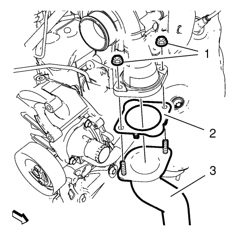
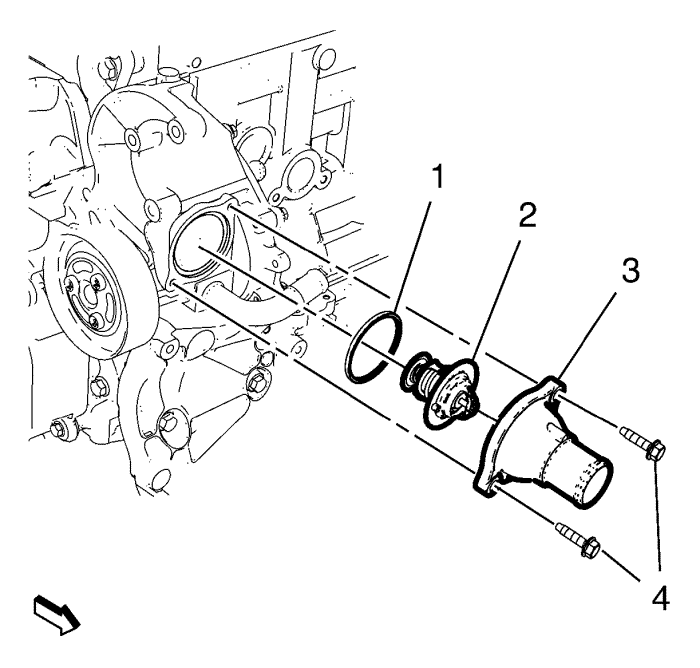
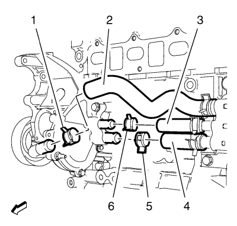
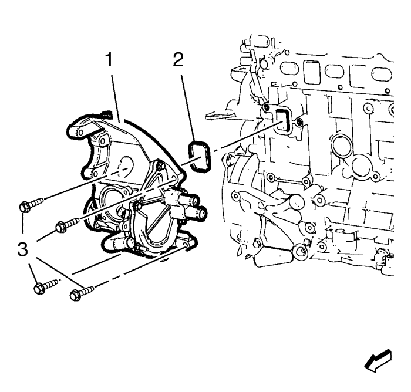

Orlando
Sustitución de la bomba de agua — 2.0L Diésel LNP
Procedimiento de desmontaje
Recubra el agente frigorífico. Consultar
Recuperación y recarga del agente frigorífico
.
Desconecte el cable negativo de la batería. Consultar
Desconexión y conexión del cable negativo de la batería
.
Desmontar la pantalla de protección del motor. Consultar
Sustitución del protector del motor
.
Retire el conducto delantero y trasero de salida del filtro de aire. Consultar
Sustitución del conducto de salida del filtro de aire
.
Retire el aislante del compartimento del motor. Consultar
Sustitución del aislamiento del compartimento delantero
.
Vacíe el sistema de refrigeración. Consultar
Drenaje y llenado del sistema de refrigeración
.
Desmonte el compresor de aire acondicionado. Consultar
Sustitución de compresor de aire acondicionado
:
2.0L Diésel LNP
→
1.6L LDE y 1.8L 2H0
.
Desmonte la bomba de la dirección asistida. Consultar
Sustitución de la bomba de la dirección asistida
:
2.0L Diésel LNP
→
1.8L 2H0
.
Desmonte el filtro de partículas de escape. Consultar
Sustitución del filtro de partículas del escape
.

Retire las 2 tuercas del tubo flexible de entrada del refrigerador de aire de carga (1).
Retire el tubo flexible de entrada del refrigerador de aire de carga (3) del turbocompresor y quite la junta (2).
Cuelgue a un lado el tubo flexible de entrada del refrigerador de aire de carga (3).
Desmonte el tubo flexible de salida del radiador. Consultar
Sustitución del tubo flexible de salida del radiador
:
1.8L 2H0
→
2.0L Diésel LNP
.

Retirar los 2 tornillos de la carcasa del termostato (4).
Retirar la carcasa del termostato (3).
Retire el termostato (2).
Retire el anillo de junta del termostato (1).

Retire la abrazadera del tubo flexible de entrada de la bomba de agua (1) y el tubo flexible de entrada de la bomba de agua (2).
Retire la abrazadera del tubo flexible de derivación del termostato (6) y el tubo flexible de derivación del termostato (3).
Retire la abrazadera del tubo flexible de entrada de refrigerante del motor (5) y el tubo flexible de entrada del refrigerante del motor (4).
Retire la polea de la bomba de agua. Consultar
Sustitución de la polea de la bomba de agua
:
LDE, LXV, 2H0 y LUW
.

Retire los 4 tornillos de la bomba de agua (3).
Desmonte de la bomba de agua (1).
Desmonte la junta de la bomba de agua (2).
Procedimiento de montaje
Limpie las superficies de sellado.
Monte la bomba de agua (1) con una junta de bomba de agua NUEVA (2).
Precaución:
Consulte
Precaución con las fijaciones
en la sección Prólogo.
Monte los 4 tornillos de la bomba de agua (3) y apriételos a
25 N·m (18 lib. pie)
.
Coloque la polea de la bomba de agua. Consultar
Sustitución de la polea de la bomba de agua
:
LDE, LXV, 2H0 y LUW
.
Monte el tubo flexible de entrada de refrigerante del motor (4) con la abrazadera del tubo flexible de entrada de refrigerante del motor (5).
Monte el tubo flexible de derivación del termostato (3) con la abrazadera del tubo flexible de derivación del termostato (6).
Monte el tubo flexible de entrada de la bomba de agua (2) con la abrazadera del tubo flexible de entrada de la bomba de agua (1).
Monte el termostato (2) con un anillo de junta de termostato NUEVO (1).
Monte la carcasa del termostato (3).
Monte los 2 tornillos de la carcasa del termostato (4) y apriételos a
8 N·m (71 lib. pulg.)
.
Monte el tubo flexible de entrada del refrigerador de aire de carga (3) con una junta NUEVA (2) en el turbocompresor.
Monte las 2 tuercas del tubo flexible de entrada del refrigerador de aire de carga (1) y apriételas a
10 N·m (89 lib. pulg.)
.
Monte el filtro de partículas de escape. Consultar
Sustitución del filtro de partículas del escape
.
Monte la bomba de la dirección asistida. Consultar
Sustitución de la bomba de la dirección asistida
:
2.0L Diésel LNP
→
1.8L 2H0
.
Monte el compresor de aire acondicionado. Consultar
Sustitución de compresor de aire acondicionado
:
2.0L Diésel LNP
→
1.6L LDE y 1.8L 2H0
.
Monte el aislante del compartimento del motor. Consultar
Sustitución del aislamiento del compartimento delantero
.
Bajar el vehículo.
Llene el sistema de refrigeración. Consultar
Drenaje y llenado del sistema de refrigeración
.
Monte el conducto delantero y trasero de salida del filtro de aire. Consultar
Sustitución del conducto de salida del filtro de aire
.
Monte el protector del motor. Consultar
Sustitución del protector del motor
.
Conecte el cable negativo de la batería. Consultar
Desconexión y conexión del cable negativo de la batería
.
Recargue el agente frigorífico. Consultar
Recuperación y recarga del agente frigorífico
.
© Copyright Chevrolet. All rights reserved